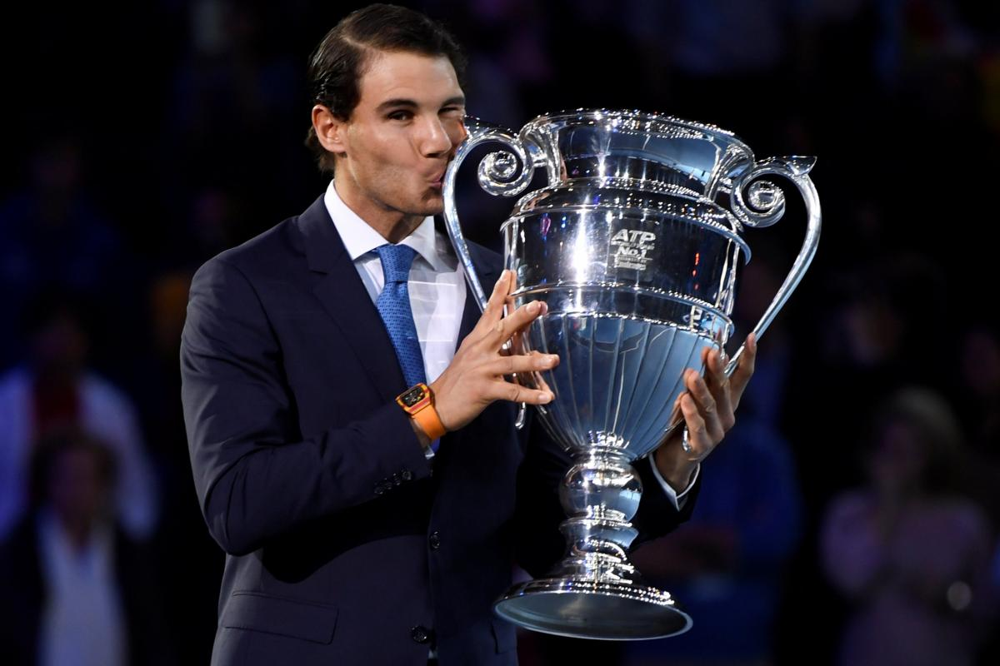

Rafael Nadal est l'un des plus grands joueurs de tennis de tous les temps, détenant des records inatteignables sur terre battue. Avec un palmarès de 11 titres en doubles et 92 en simple , dont 22 Grand Chelem et 36 Masters 1000, le Taureau de Manacor fait partie du légendaire "Big Three" aux côtés de Federer et Djokovic, dominant le tennis mondial pendant près de deux décennies.
